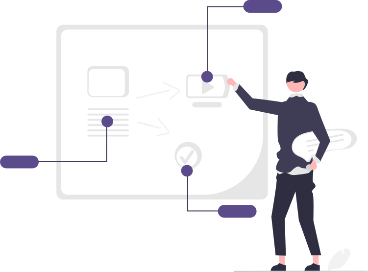
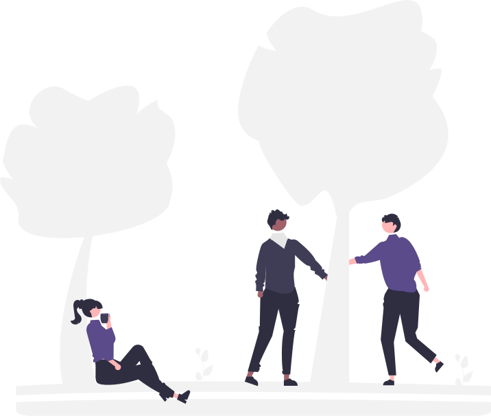
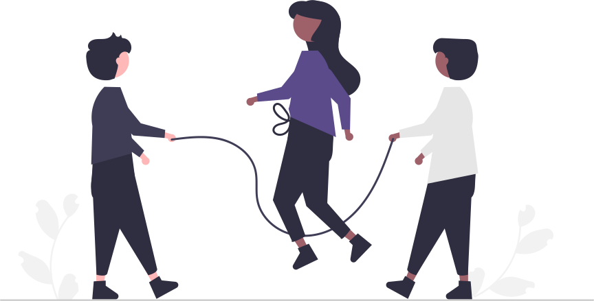

Introducation
Information Technology Study Community atau disingkat dengan nama
ITSC, didirikan pada tanggal 30 Juli 2013. ITSC sendiri merupakan
sebuah organisasi/ komunitas yang beranggotakan siswa/siswi Sistem
Informatika Jaringan dan Aplikaasi SMK Negeri 2 Klaten.
Salah satu misi ITSC adalah terwujudnya SMK N 2 Klaten sebagai
sekolah menengah yang maju dalam bidang "Teknologi & informasi" dan
berdaya guna bagi siswa/siswi SMK Negeri 2 Klaten.
Divisi

Divisi adalah suatu kegiatan pemberlajaran yang didalamnya membahas
seputar "Informasi & teknologi". Divisi ini dilaksanakan setiap satu
minggu sekali, dan wajib diikuti oleh siswa/siswi jurusan Sistem,
Informatika, Jaringan, dan Aplikasi.
Divisi ini dilakukan dengan sistem tutor sebaya. Jadi
pembelajarannya pun akan berjalan secara kondusif bagi anggota ITSC.
Tujuan divisi sendiri yaitu untuk membentuk, melatih dan
mengembangkan minat dan bakat dari para siswa/siswi, khususnya
siswa/siswi dalam Jurusan Sistem Informatika, Jaringan dan Aplikasi
SMK Negeri 2 Klaten.
Macam - macam divisi:
- Divisi Aplikasi
- Divisi Web Dev
- Divisi Desain Grafis
- Divisi Jaringan
- Divisi Sistem Internet Of Things
Kegiatan Tahunan
Selain Kegiatan rutin mingguan ITSC yaitu divisi, ITSC juga memiliki
kegiatan tahunan yang berupa event.
Calling

Characteristic and Leadership Building atau biasa disingkat
calling adalah sebuah kegiatan yang diadakan untuk pengenalan awal
yang bertujuan untuk memperkenalkan organisasi ITSC pada anggota
baru.
Hari Keakraban

Hari keakraban adalah kegiatan yang dadakan untuk lebih merekatkan
hubungan antara siswa/siswi SIJA sehingga para anggota akan
menjadi lebih solid.